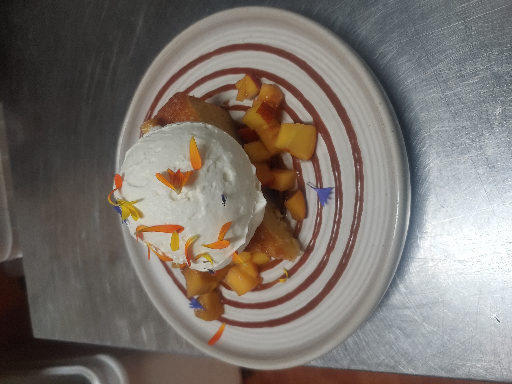

Almond Cake

This is a true crowd pleaser. It pairs perfectly with seasonal macerated fruit and whipped creme fraiche.
For this recipe you will need:
- 9" or 10" Springform pan
- Stand mixer with whisk attachment
- Kitchen scale
Ingredients
| 280g |
Butter |
| 128g |
All Purpose Flour |
| 125g |
Almond Flour |
| 125g |
Powdered Sugar |
| 6 Lg |
Eggs |
| 1 Lg |
Egg Whites |
| 1/2 tsp |
Almond Extract |
| 1/2 tsp |
Salt |
| 250g |
Sugar |
| 2 tsp |
Vanilla Extract |
| 1 1/2 Tbsp |
Baking Powder |
Instructions
- Set your oven to 325°F.
- Butter and flour your springform pan and apply parchment to the bottom of the pan.
- Mix your almond flour and powder sugar on low in the stand mixer.
- Add salt and egg whites and mix on high to form a paste, scrap down the bowl often from this point on.
- Mix in the sugar on medium speed until the mixture becomes crumbly.
- Add the room temperature butter and vanilla then mix on high until light and fluffy.
- With the mixer running on medium add the eggs one at a time stopping half way through to scrape down the bowl.
- Last add the flour and baking powder on low speed until incorporated, scraping the bowl once more.
- Pour into spring form pan and smooth ou the top.
- Bake for 60 - 70 minutes or until cake tester comes out clean from the center.
- Allow to cool completely before removing from the pan and serving.